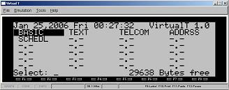

VirtualT is an emulator for the Tandy line of laptop computers, specifically the Model 100, Model 102 and Model 200. The emulator has also been expanded to support the Tandy's close relatives, the NEC PC-8201 and Ollivetti M10 models. The purpose of this help system is primarly for use of the VirtualT, so only a brief description of the Model T will be provided here.
In 1983, Tandy Corporation introduced a laptop computer (The Model 100) based on a CMOS 8085 processor running at 2.4 Mhz. Since this was the world's first laptop, the Model 100 user group likes to call it the "Model T". The laptop has an integrated monochrome LCD display that is 40 characters by 8 lines, integrated 300 bps modem, serial and parallel ports, cassette interface port, and 32K RAM. The operating software is ROM based and includes BASIC, a text editor, and telecom, schedule and address applications. Also included is Menu program that allows the user to browse files stored in the laptop's RAM.
Files in the Model T are saved in the battery backed RAM using a very simple file system with a fixed size File Directory Table. On all emulated models except the T200, the directory table can store 24 file names. For the T200, the table is 48 files. The File Directory Table defines the name of each file using an 8 character filename using a "6.2" format. The File Directory Table also defines the file attributes such as defining if the file is a ROM or RAM object, the file type and the file's starting memory loacation.
Files in memory are organized as contiguous objects and files of similar type are grouped together in memory. If a file size changes, then memory representing other files will be moved to maintain contiguous memory usage. When editing files on the Model T, all changes are made "in place" to reduce memory requirements. There is also a sort-of "pseudo file" that represents the "unsaved" BASIC program. This is a special storage location in memory without an associated filename or File Directory Table entry. It is a "pseudo file" only because it is persisted between successive calls to BASIC.
When the Model T is first powered on, it presents a display for interfacing with the Laptop's ROM based applications and for selecting and using files stored in the the RAM filesystem. The MENU program displays the time and date, and presents a user interface for navigating each of the visible entries in the File Directory Table.

The BASIC Program provides powerful, feature rich programming capability to the Model T. The BASIC implementation is a line number based interpreter with keyword tokenization at entry time. The tokenization saves memory and inreases program execution speed. The language provides full support for different variable precision, text and graphic output to the LCD, file access to RAM, serial and cassette files, string manipulation, etc.
The TEXT program is a document editing application for writing / editing text documents. It provides basic word processing features for seleting, copying and pasting text.
The TELCOM Program provides terminal support for the built-in modem and for the serial port.
The ADDRSS Program is a basic address storage utility for saving address and phone number information. This program uses TEXT in conjunction with a specially named file, "ADDRSS.DO" to provide this functionality. The ADDRSS.DO file does not exist as a default and must be created using TEXT prior to using the ADDRSS program.
The SCHEDL Program is a basic schedule management utility for keeping track of schedule items. Like ADDRSS, this program also uses TEXT in conjunction with a specially named file, "SCHEDL.DO" to provide this functionality. The SCHEDL.DO file does not exist as a default and must be created using TEXT prior to using the SCHEDL program.